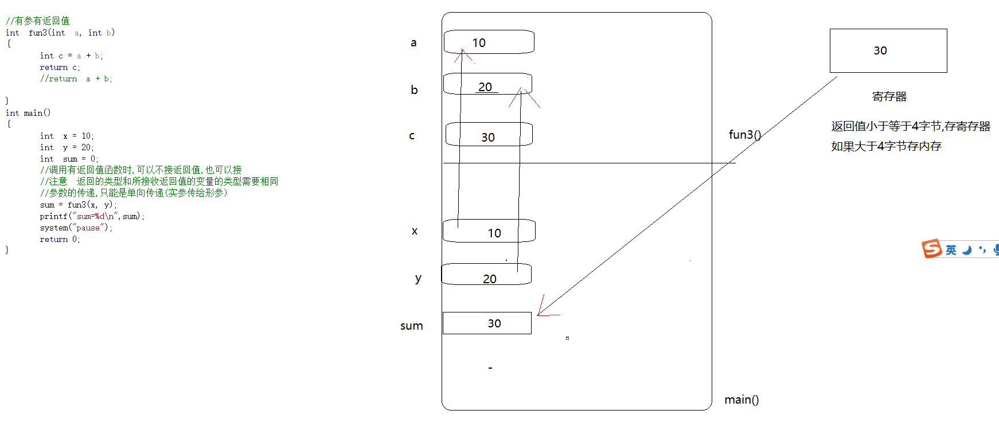

1 函数以及作用:
函数: 函数就是将原来在main函数中的代码换一个位置,存放在另一个地方
//存代码块的东西就是函数
函数的作用:
1 为了减少重复代码块
2 代码模块清晰
2 无参无返回值函数的定义和调用
#include<stdlib.h>
//函数的定义不能定义在函数的代码块里,必须在函数的外面定义函数
//符号加()代表这个是一个函数
//如果定义的函数没有形参,可以不填,也可以写void,但是返回值如果没有,需要写void
// 无参无返回值函数
//函数{}是函数体,所有的代码必须放在{}中
//函数结束之前需要返回值
//注意:返回值的类型看函数定义时,所需要的类型
void fun()
{
printf("hello fun\n");
printf("hello dfafa\n");
return;
}
int main()
{
printf("hello main\n");
//函数的调用 函数名+()
fun();
system("pause");
return 0;
}
2 有参无返回值的定义和调用
//定义一个有参无返回值函数
//函数定义时()里面的参数叫形参,(因为这个形参只是形式上的参数,定义函数时没有给形参开辟空间)
//形参只有在被调用时才会分配空间
//形参 的定义 类型名+变量名
void fun2(int a, int b)
{
int c = 0;
c = a + b;
printf("a+b=%d\n",c);
return;
}
int main()
{
printf("hello main\n");
//函数的调用 函数名+()
//fun();
//函数调用有参函数时,不可以不传参
//调用函数时.()里面的参数叫实参,
//实参的类型和形参的类型必须一致
//函数调用时,实参的个数应该和形参的个数相同
//实参为常量,可以为变量,可以为表达式,只要实参的类型和形参的类型匹配即可
int x = 10;
int y = 20;
//fun2(2,3)
fun2(x,y);
//fun2(x + y, x*y);
system("pause");
return 0;
}
3 有参有返回值

代码:
#define _CRT_SECURE_NO_WARNINGS
#include<stdio.h>
#include<string.h>
#include<stdlib.h>
//有参有返回值
int fun3(int a, int b)
{
int c = a + b;
return c;
//return a + b;
}
int main()
{
int x = 10;
int y = 20;
int sum = 0;
//调用有返回值函数时,可以不接返回值,也可以接
//注意 返回的类型和所接收返回值的变量的类型需要相同
//参数的传递,只能是单向传递(实参传给形参)
//sum = fun3(x, y);
printf("sum=%d\n",fun3(x,y));//将函数调用的返回值作为其他函数的参数
system("pause");
return 0;
}
4 实参传给形参,形参的值改变不会改变实参的值
以后如果实参是传变量本身,只会是值传递,不会吧变量本身的空间给传进去
void swap(int a, int b)
{
int c = a;
a = b;
b = c;
printf("a=%d b=%d\n",a,b);
return;
}
int main()
{
int x = 10;
int y = 20;
int sum = 0;
//调用有返回值函数时,可以不接返回值,也可以接
//注意 返回的类型和所接收返回值的变量的类型需要相同
//参数的传递,只能是单向传递(实参传给形参)
//sum = fun3(x, y);
//printf("sum=%d\n",fun3(x,y));//将函数调用的返回值作为其他函数的参数
swap(x,y);
printf("x=%d y=%d\n",x,y);
system("pause");
return 0;
}
5 函数的声明
}
//声明的作用就是告诉编译器这个东西在其他地方定义
//函数的声明,把函数的定义形式放在调用之前
//没有函数体就是函数的声明,有函数体就是函数的定义
//函数声明不用写函数体
//声明函数时需要加分号
//函数的声明不加extern 也是可以的
//extern 用来声明
//extern void swap(int a, int b);
//void swap(int a , int b);
//void swap(int , int );
int main()
{
int x = 10;
int y = 20;
int sum = 0;
//调用有返回值函数时,可以不接返回值,也可以接
//注意 返回的类型和所接收返回值的变量的类型需要相同
//参数的传递,只能是单向传递(实参传给形参)
//sum = fun3(x, y);
//printf("sum=%d\n",fun3(x,y));//将函数调用的返回值作为其他函数的参数
void swap(int a, int b);
swap(x,y);
printf("x=%d y=%d\n",x,y);
system("pause");
return 0;
}
void swap(int a, int b)
{
int c = a;
a = b;
b = c;
printf("a=%d b=%d\n", a, b);
return;
}
6 return 和exit函数的区别
return 结束当前所在的函数
如果return在子函数中调用只会结束子函数,如果return在main函数中,会结束整个程序
exit 是一个库函数,用来结束整个程序,
不管exit在哪里调用,都会结束整个程序
exit(0);
7 防止头文件重复包含
两种方法:
#ifndef 宏(宏的名字最好和文件相同,大写)
#define 宏
#define 宏
#endif
第二种方法:
#pragma once
8 内存与指针
指针 === 地址 == 编号

9 指针变量
存放指针(地址)的变量
因为地址编号(0x0000 0000)如此,所以我们的指针变量占4个字节就可以存下
64位编译器,内存的编号范围是0x0000000000000000 - oxffffffffffffffff ,这样的编号,需要8个字节存下,所以指针变量也需要8个字节
10 指针 变量的定义和初始化
int main()
{
int a = 10;
//定义指针的三步骤
//1 *与符号结合代表是一个指针变量 2 要保存谁的地址,将他的定义形式放在此处
//3 用*p替换掉定义的变量
//*p
int *p =&a;
//分析
//1与*结合代表这个一个指针变量
//2p是变量,p的类型是将变量p本身拖黑,剩下的类型就是指针变量的类型 int *
//3指针变量p用来保存什么类型数据的地址 ,将指针变量p和指针变量p最近的*一起拖黑,
//剩下什么类型就保存什么类型数据的地址
//p = &a;
system("pause");
return 0;
}
11 指针变量保存谁的地址就指向了谁
*p = 100;// 在使用时,*与p结合代表,取p指针所指向那块空间的内容
printf("a=%d\n",a);
12 在使用时,对一个表达式取*,就会对表达式减一级*,如果对表达式取&,就会加一级*
13 指针变量的大小
不管什么类型的指针,大小只和系统编译器有关系,
int main()
{
char *p1;
short *p2;
int *p3;
int **p4;//p4也是一个指针变量 int **
printf("%d\n",sizeof(p1));
printf("%d\n", sizeof(p2));
printf("%d\n", sizeof(p3));
printf("%d\n", sizeof(p4));
system("pause");
return 0;
}
14 不同类型的指针变量,取指针指向的内容的宽度
指针的宽度 = sizeof(将指针变量与指针变量最近的*拖黑,剩下的类型)
宽度也叫做步长;
步长: 指针加1跨过多少个字节
char *p 1
short *p 2
int *p 4
Int **p sizeof(int *) 4
int main()
{
int num = 0x01020304;
char *p1 = (char *)#//int *
short *p2 = (short *)#
int *p3 = #
//通过*取指针变量所指向那块空间内容时,取的内存的宽度和指针变量本身的类型有关
printf("%x\n",*p1);
printf("%x\n", *p2);
printf("%x\n", *p3);
system("pause");
return 0;
}